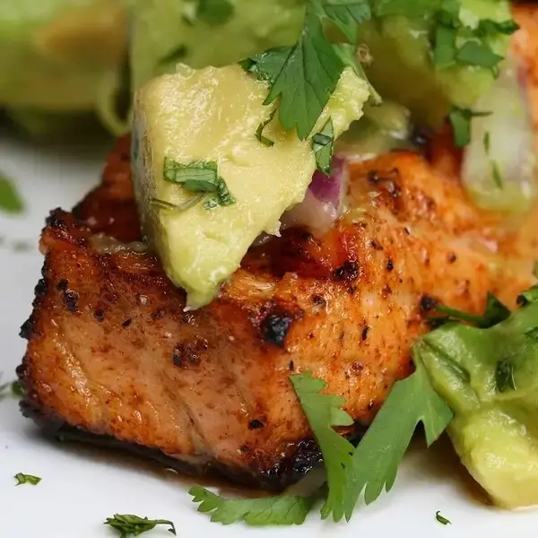

Grilled Salmon With Avocado Salsa

This grilled salmon with avocado salsa is a fresh and healthy dinner option! The juicy salmon and tangy avocado salsa make for a flavorful and satisfying meal.
Ingredients
SALMON
- 1 tablespoon olive oil
- 1 teaspoon salt
- 1 teaspoon pepper
- 1 teaspoon paprika
- 4 salmon fillets
AVOCADO SALSA
- avocados
- ¼ red onion
- 1 lime, juiced
- 1 tablespoon olive oil
- 1 ½ teaspoons salt
Steps
- In a large bowl, mix oil, salt, pepper, and paprika. Coat the salmon fillets with the marinade and refrigerate for 30 minutes.
- Grill the salmon on an 11 inch (28 cm) griddle pan on high heat for two minutes on each side.
- In a separate bowl, lightly toss avocados, ¼ red onion, the juice from one lime, 1 tablespoon olive oil, and salt to taste.
- Spoon avocado salsa on top of the cooked salmon. Top with finely cut cilantro.
- Enjoy!